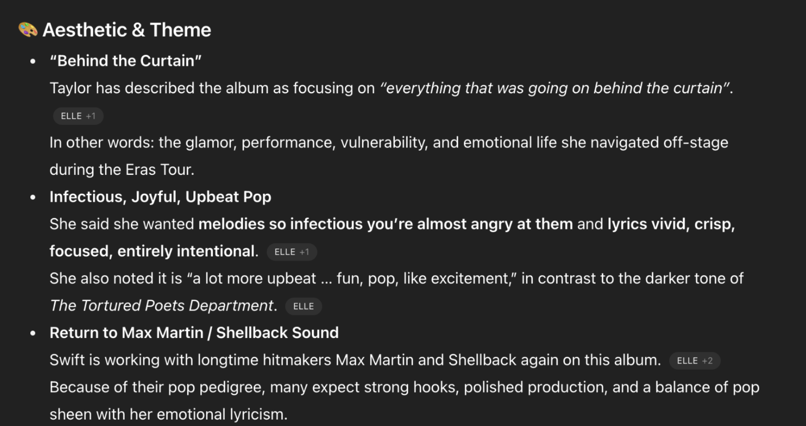
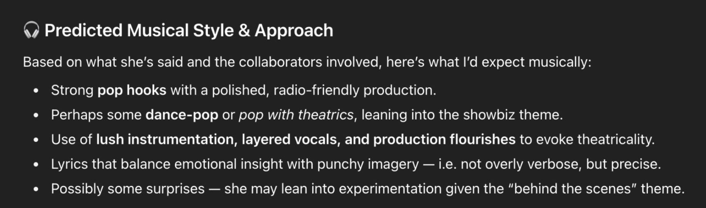
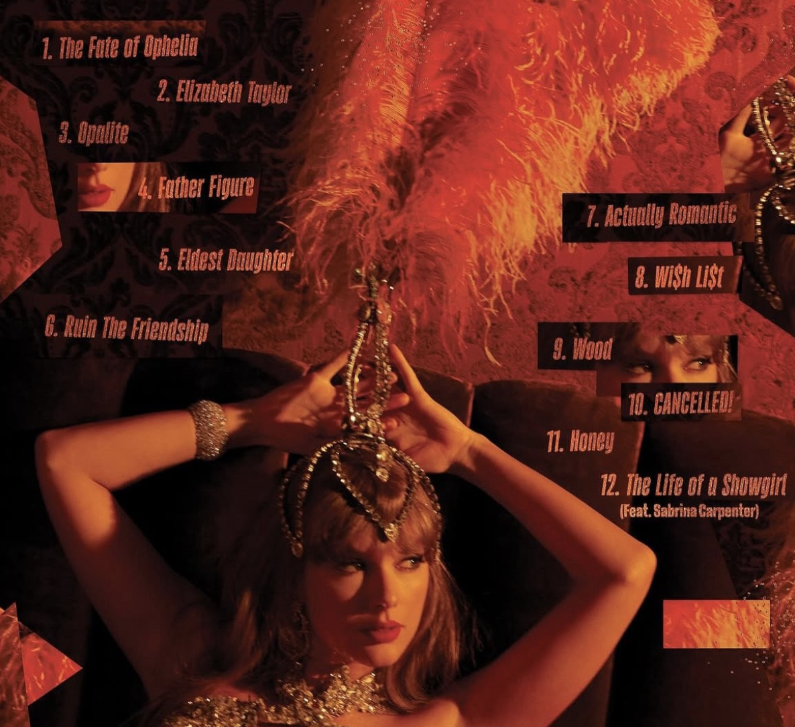

It even started making predictions without me asking:Part 1: Can an LLM Predict Taylor Swift’s Next Album?

Context
I’ve been looking forward to the release of The Life of a Showgirl, Taylor Swift’s upcoming album. Fans love to try and predict what the songs will sound like, and since LLMs are great at understanding patterns and semantics, I wondered if they would be able to predict some lyrics and themes of this upcoming album.
In this experiment, I used ChatGPT 5.
Setting the Stage: Taylor’s Lyricism and Singing Style
The experiment started with a warm-up: I asked the model to describe Taylor’s lyrics and singing style. I did this so that the model would “internalize” her singing style and lyrics in a more complex way – I was hoping that if it output some of her lyrics, for example, it would draw on these patterns more and prime it to generate more accurate prediction for her upcoming album.
This was the output of ChatGPT:
Taylor Swift’s music has evolved a lot over the years, both in her lyrics and her singing style.
Here’s a breakdown:🎵 Lyrics
- Storytelling Roots (Country Era)
In her early albums (Taylor Swift, Fearless), her lyrics leaned heavily into narrative storytelling, often drawing from personal teenage experiences—crushes, heartbreak, growing up. Songs like Tim McGraw and Love Story use vivid imagery and clear plots.
Confessional & Relatable (Pop Transition)
With Speak Now and Red, her writing became more confessional and introspective. She used metaphors (All Too Well’s scarf, Treacherous’s winding path) and emotional detail that resonated with listeners going through similar life stages.Sharp, Witty, and Self-Aware (Pop Era)
In 1989 and Reputation, her lyrics shifted to more minimalist and punchy pop phrasing, but still carried wit and cultural references. She leaned into themes of identity, image, and reinvention (Blank Space, Delicate).Folklore & Beyond (Indie/Folk Influence)
With Folklore and Evermore, her lyrics became more literary and character-driven. Instead of only writing from her perspective, she created fictionalized characters and intertwined narratives (Betty, Cardigan, The Last Great American Dynasty). This phase shows her versatility as a poetic, almost novelist-like songwriter.Themes Across Eras
Love and heartbreak, friendship, nostalgia, fame, self-reflection, and resilience are recurring. She’s known for easter eggs and layered meanings in her writing, rewarding careful listeners.🎤 Singing Style
- Early Years (Country)
Light, youthful, with a country twang. She leaned more on storytelling delivery than vocal power.
Pop Era
Her voice matured and became smoother, with more control. On 1989, she embraced synth-pop production, using breathy tones and layered harmonies (Style, Wildest Dreams).Experimentation & Edge
On Reputation, she experimented with darker tones, vocal effects, and speech-like phrasing (Look What You Made Me Do, End Game).Folklore / Evermore
Softer, more intimate. She used a lower register and indie/folk vocal delivery, focusing on emotion over vocal acrobatics (Exile, Peace).Recent Work (Midnights, 2022)
Combines pop smoothness with her indie introspection. She often employs hushed, conversational singing, using atmosphere and mood more than power belting (Anti-Hero, Lavender Haze).✅ In short:
- Lyrics: From teenage diary-style stories → sharp pop lines → literary indie-folk narratives.
- Vocals: From country twang → polished pop → experimental and atmospheric.Would you like me to compare her lyrical style to other artists (like Bob Dylan for storytelling or Lorde for introspective pop), or keep the focus just on her evolution?
Along with this idea of “priming,” I also asked the model what it already knew about this album. It said things like:


From Tracklist to Predictions
For context, these are the names of the songs in this upcoming album:
1. The Fate of Ophelia
2. Elizabeth Taylor
3. Opalite
4. Father Figure
5. Eldest Daughter
6. Ruin the Friendship
7. Actually Romantic
8. Wi$h Li$t
9. Wood
10. CANCELLED!
11. Honey
12. The Life of a Showgirl (featuring Sabrina Carpenter)

I then prompted it: “based on what you know about Taylor Swift’s lyric style and the style of this album, predict what the lyrics will be for each of these 12 songs.”
Surprisingly, this triggered a guardrail:
<img src="guardrail.png" width="80%"/>I tried getting around this by asking instead: “for each of the 12 songs, predict phrases and lines that may show up in the actual song.”
While this prompt still triggered the guardrail, this time, the model gave me short speculative phrases and stylistic predictions.
Aggregated Predictions
Here’s a combined list of ChatGPT’s predictions, merging its style guesses and the lyrical fragments it generated:
1. The Fate of Ophelia
Likely Shakespearean/literary allusion (Swift loves them). Expect themes of drowning in expectation or beauty, glamorous tragedy, but with a twist of empowerment — reframing Ophelia as a performer who chooses her stage.
- “drowned in the spotlight”
- “petals on the water / torn apart by whispers”
- “a tragedy in glitter heels”
- Likely to use water, flowers, mirrors, stage curtains
2. Elizabeth Taylor
A glittering, campy ode to old Hollywood glamor. Could mix romance and fame, with metaphors about diamonds, marriages, or reinvention. Possibly a playful take on luxury and image.
- “diamonds can’t keep secrets”
- “love is a costume change”
- “married to the idea of love itself”
- Expect Hollywood, paparazzi, silk gowns, violet eyes references
3. Opalite
Opalite is a luminous stone — often linked to transformation and clarity. This might be a dreamy, atmospheric pop track about self-discovery, resilience, or the fragile glitter of illusions.
- “catch the light but never hold it”
- “fragile as glass, glowing in the dark”
- “a prism of promises”
- Imagery: crystals, moonlight, shifting colors, illusion
4. Father Figure
Title suggests something heavier. Could confront power, mentorship, or complicated dynamics with men in authority. Expect sharp, confessional detail — maybe her most cutting lyric track on the album.
- “your shadow was longer than mine”
- “I called it guidance, you called it love”
- “the applause was never for me”
- Darker tone with power, authority, inheritance, control
5. Eldest Daughter
Swift tends to write about identity and responsibility (Marjorie, The Archer). This track might channel themes of family burden, being “the caretaker,” or breaking cycles, but framed with witty, self-aware pop phrasing.
- “I set the table, I carried the blame”
- “born to be the backbone”
- “a crown of quiet sacrifice”
- Could use family imagery: dishes, staircases, hand-me-downs
6. Ruin the Friendship
Playful but emotional. Likely about tension between friendship and romance — a “what if we crossed the line” pop anthem. Expect sly one-liners and infectious hooks.
- “what if the joke stopped being funny?”
- “your hand brushed mine / and the room caught fire”
- “friends don’t kiss like that”
- Playful use of boundaries, lines crossed, laughter turning electric
7. Actually Romantic
Could be satirical — mocking clichés of love songs while delivering a secretly earnest one. Taylor might poke fun at “romance tropes” while admitting she wants them.
- “roses on the dashboard, cliché but it’s true”
- “I hate myself for loving this”
- “fairy lights strung on bad decisions”
- Juxtaposes mockery of romance tropes with sincere desire
8. Wi$h Li$t
The stylized title suggests a fun, upbeat bop. Likely materialistic and cheeky — a catalog of desires that doubles as commentary on fame, consumption, and yearning. Think Blank Space meets Bejeweled.
- “tick it off, diamonds first”
- “more than money could buy, but still on the list”
- “wishing never cost a cent”
- Expect consumer culture metaphors, shopping lists, playful greed
9. Wood
Could be metaphorical (something enduring, something that burns, or even stagecraft — “knocking on wood”). Possibly a folksy-leaning ballad tucked into the otherwise pop-heavy album.
- “knock on wood, it all could fall”
- “you built me up grain by grain”
- “burn me down, I’ll still smell like home”
- Could weave wood grain, bonfires, forests, carpentry into metaphors
10. CANCELLED!
Almost certainly ironic. Could tackle cancel culture, reputation, and public scrutiny — but delivered with sass and humor, not heaviness. Think Shake It Off’s cousin.
- “you can’t erase me with a headline”
- “the louder they boo, the brighter I shine”
- “tickets still sold out tonight”
- Sarcastic media/online culture language, capital letters, irony
11. Honey
Warm and sweet, but maybe sticky/dangerous. Might balance sugary metaphors with bite (“honey dripping, honey trapping”). A flirtatious mid-tempo.
- “sweet as sin, stick to my skin”
- “poison in the sugar”
- “you call me honey, I call it a trap”
- Sensual, using nectar, bees, stickiness, golden light
12. The Life of a Showgirl (feat. Sabrina Carpenter)
The title track. Expect maximalist glam — themes of performance, sequins, stage lights, exhaustion behind the makeup. With Sabrina, it may become a cheeky duet about femininity, spectacle, and reclaiming control of the “showgirl” image.
- “sequins hide the sleepless nights”
- “the curtain falls, I’m still performing”
- “showgirl smile, backstage tears”
- Likely playful banter with Sabrina: spotlights, feathers, champagne, exhaustion beneath glam
Reflection
Even as someone who listens to many of Taylor Swift’s songs, its difficult to tell how accurate these predictions seem. However, the overall cadence and “feel” of these lyric excerpts don’t seem too outlandish.
This new album comes out at midnight on October 3rd, so I’ll be sure to update and compare how accurate ChatGPT was after I listen to the full album!